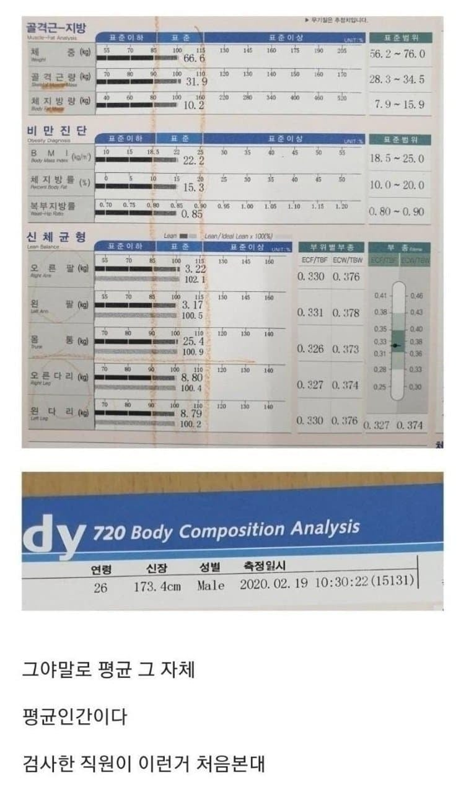

싱글벙글 평균적 인간
댓글
키도 평균이네
흥미로운이야기)
공군전투기가 프롭기에서 제트기로 넘어가는 1950년대
괴랄하게 거대한 제트엔진에 공기흡입구까지 복잡해진 설계에 전투기 콕피트는 매우 좁아지게됨
아무튼간에 알잘딱으로 만들어진 제트기에 사고가 잦아지게됨
그리고 파일럿들의 가장 큰 불만이 불편해진 좌석이 꼽혔었음
조사해보니깐 제작사에서 그냥 파일럿들의 평균 신장크기로 맞추어서 좌석을 만들었던것
그리고 그 평균에 딱맞는 파일럿은 4천명중에 한명도 없었다함
그렇게 원인이 밝혀지고나서 시트포지션및 패달위치를 파일럿 니즈에 맞출수있게 설계변경한 뒤에
사고율이 확 줄었다함
이정도면 그냥 유개에 글을 쓰자..
성인 도라에몽이네
잭 텐렉
김철수
체지방률 15%면 솔직히 평균/중간값 아님 ㅋㅋㅋㅋ 남자 평균 22~24 이정도일텐데 화나게 표준이 저래 낮아가지고
20프로 넘으면 돼지아님?
뭔소리지 22 24면 돼지인데
여자 15면 완전 삐적 꼬랐는데 남자는 많이다릉가보네
요즘시대에 15면 몰라도 20이상이면 확실히 몸에 해로워요
키도 평균
신기하노
섹스도 매일하네
이정도 평균체형이면 오히려 어케생겼을지 궁금하다
시대의 기수로구나